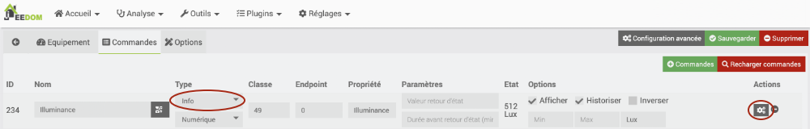
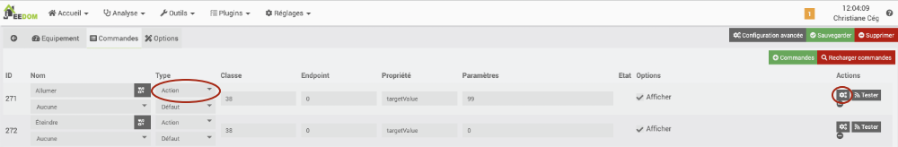
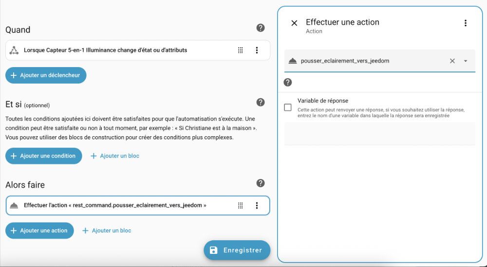
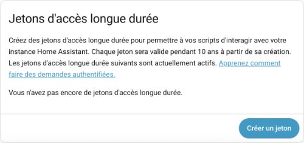
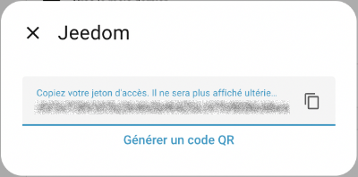
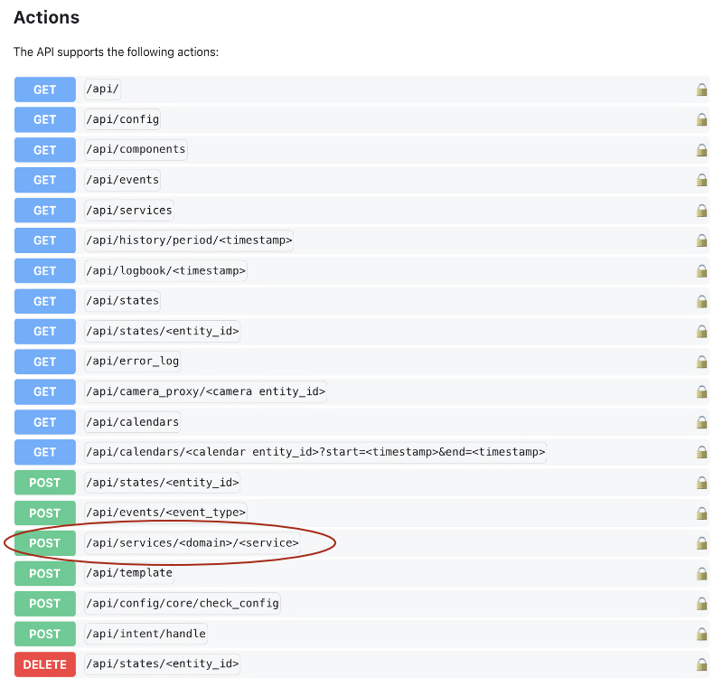
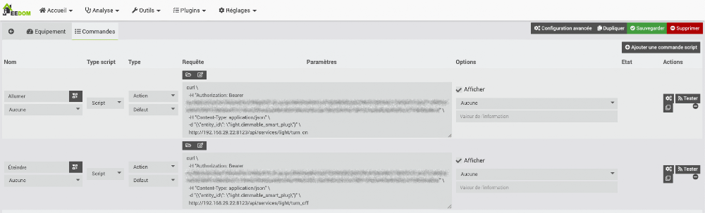
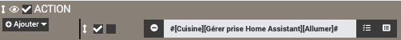
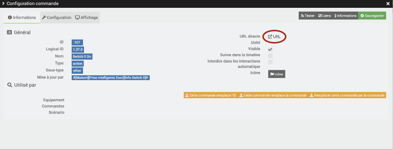

103. Communication Home Assistant - Jeedom via l'API¶
103.1 Home Assistant : interagir avec un objet branché sur Jeedom¶
Certains objets connectés ne peuvent pas être ajoutés à Jeedom et d'autres ne peuvent pas être ajoutés à Home Assistant. Tout dépend des plugins ou des intégrations qui existent sur l'un ou l'autre de ces produits.
Peut-être même que vous avez mis beaucoup de temps à développer un objet personnalisé sur l'une des plateformes et que vous désirez maintenant passer à l'autre sans devoir tout recommencer.
Grâce à certaines techniques de communication, ce n'est pas un problème, on pourra avoir des objets sur l'une des boîtes domotiques qui sont contrôlés par l'autre et vice-versa.
Les deux principales techniques sont :
- Travailler avec un API (Application Programming Interface) (expliqué dans la présente fiche et dans la suivante)
- MQTT
Pour que la communication entre deux applications ait lieu à l'aide d'un API, il faut qu'une application ait le moyen de lancer une commande sur l'autre application. Le plus souvent, cette commande passera par un URL. On dira alors qu'on travaille avec un API REST.
Sous Jeedom, un URL est assigné à chaque commande ou état d'un objet connecté. C'est grâce à cet URL, que Home Assistant pourra récupérer la valeur d'un capteur branché sur une boîte domotique Jeedom ou encore de modifier la valeur d'un récepteur.
Récupérer la valeur d'un capteur Jeedom dans Home Assistant¶
Pour chaque capteur, Jeedom définit au moins une commande de type info.
Si un capteur fournit plusieurs informations, il faudra sélectionner la bonne commande.

Avec l'engrenage situé à droite de la commande, on peut retrouver l'URL qui donne la valeur de cette commande.
C'est cet URL qui est la clé pour permettre à un autre système d'accéder à la valeur de la commande.
Pour voir la valeur de la commande dans Home Assistant, il suffit d'ajouter dans le fichier configuration.yaml un capteur de la plateforme REST et d'y coller l'URL de la commade désirée.
Fichier configuration.yaml
sensor:
- platform: rest
resource: http://192.168.1.145/core/api/jeeApi.php?apikey=NptrtQxE...iXI6LsiU&type=cmd&id=234
name: porte d'entrée Jeedom
Une fois Home Assistant redémarré (un rechargement des configurations n'est pas suffisant), le capteur de Jeedom pourra être utilisé au même titre que n'importe quel autre qui serait branché directement dans Home Assistant.
Petit hic cependant, le délai d'actualisation est généralement plus long que si le capteur était branché directement à Home Assistant. Par exemple, mes tests avec un virtuel prenaient une quinzaine de secondes avant de se rafraîchir dans Home Assistant.
Modifier l'état d'un récepteur réel Jeedom dans Home Assistant¶
Home Assistant peut modifier la valeur d'un récepteur branché à Jeedom.
Il faut ici aussi ajouter un capteur dans le fichier configuration.yaml.
Cette fois, l'URL correspondra à une commande de type action.

Si, dans Jeedom, la technique pour retrouver l'URL est la même que pour une commande Info, le travail dans Home Assistant sera différent lorsqu'on veut envoyer un ordre.
Plutôt que de créer un capteur, il faut créer des commandes REST.
Ici, j'ai ajouté deux commandes : une pour allumer la prise et l'autre, pour l'éteindre.
Fichier configuration.yaml
rest\_command:
allumer\_lumiere\_jeedom:
url: "http://192.168.1.145/core/api/jeeApi.php?apikey=NptrtQxE...iXI6LsiU&type=cmd&id=271"
eteindre\_lumiere\_jeedom:
url: "http://192.168.1.145/core/api/jeeApi.php?apikey=NptrtQxE...iXI6LsiU&type=cmd&id=272"
Après un redémarrage de Home Assistant, il est possible d'utiliser ces commandes en tant qu'action pour interagir avec le récepteur de Jeedom.

Modifier la valeur d'un virtuel¶
La valeur d'un virtuel sur Jeedom peut être modifiée à partir de Home Assistant.
Après avoir récupéré l'URL qui permet d'accéder à la valeur du virtuel, il suffit d'y ajouter &value= suivi de la valeur à donner.
Fichier configuration.yaml
rest\_command:
temperature\_virtuelle\_jeedom\_chaud:
url: "http://192.168.1.145/core/api/jeeApi.php?apikey=NptrtQxE...iXI6LsiU&type=cmd&id=209&value=30"
103.2 Jeedom : récupérer la valeur d'un capteur branché sur Home Assistant¶
Vous avez un objet connecté dans Home Assistant et vous désirez l'utiliser dans Jeedom? Pas de problème!
Il est possible de configurer Home Assistant pour qu'il envoie des informations à un autre système, par exemple Jeedom.
La technique est tout à fait opposée à celle utilisée pour récupérer dans Home Assistant une valeur en provenance de Jeedom.
Sous Home Assistant, les objets connectés n'ont pas d'URL que l'on peut récupérer. Il faudra plutôt que Home Assistant pousse vers Jeedom la valeur souhaitée, dans un objet virtuel dont on connaîtra l'URL.
Home Assistant utilisera pour cela des commandes de type REST.
Voici comment y parvenir :
- Dans Jeedom, créez un équipement virtuel qui recevra la valeur de Home Assistant.
Donnez-lui un nom clair, par exemple Luminosité cuisine - Home Assistant.
Dans l'onglet Commandes, cet objet virtuel devra avoir une info virtuelle pour recevoir la valeur de Home Assistant. Dans cet exemple, je l'ai simplement appelée valeur.
 * Dans Jeedom, retrouvez l'URL de cet équipement virtuel.
* Pour tester l'URL, entrez-le dans un navigateur et ajoutez-y &value= suivi de la valeur à donner, que vous coderez ici en dur. Vous saurez que l'URL est bon quand le virtuel dans Jeedom affiche la valeur entrée.
* Dans Home Assistant, ajoutez une entrée dans le fichier configuration.yaml.
* Dans Jeedom, retrouvez l'URL de cet équipement virtuel.
* Pour tester l'URL, entrez-le dans un navigateur et ajoutez-y &value= suivi de la valeur à donner, que vous coderez ici en dur. Vous saurez que l'URL est bon quand le virtuel dans Jeedom affiche la valeur entrée.
* Dans Home Assistant, ajoutez une entrée dans le fichier configuration.yaml.
Fichier configuration.yaml
rest\_command:
pousser\_eclairement\_vers\_jeedom:
url: "http://192.168.1.145/core/api/jeeApi.php?apikey=NptrtQxE...iXI6LsiU&type=cmd&id=71&value={{ states('sensor.neo\_capteur\_5\_en\_1\_illuminance')}}"
La valeur du capteur devrait apparaître dans l'objet virtuel sous Jeedom.
 * Maintenant, il faut créer une automatisation qui va exécuter cette action dès que la valeur du capteur change. Comme ça, la valeur réelle du capteur sera toujours synchronisée avec la l'objet virtuel sous Jeedom.
* Maintenant, il faut créer une automatisation qui va exécuter cette action dès que la valeur du capteur change. Comme ça, la valeur réelle du capteur sera toujours synchronisée avec la l'objet virtuel sous Jeedom.

103.3 Jeedom : lancer une action sur un récepteur branché sur Home Assistant¶
Home Assistant peut permettre à d'autres systèmes de lancer une commande pour interagir avec ses propres objets connectés.
Clé d'API¶
Vous devez générer une clé d'API, que Jeedom appelle jeton d'accès de longue durée, pour permettre à Jeedom de lancer une action dans Home Assistant :
- Dans Home Assistant, cliquez sur votre nom au bas de la colonne de gauche, cliquez sur l'onglet Sécurité puis faites défiler la page jusqu'à la section Jetons d'accès de longue durée.

* Cliquez sur Créer un jeton puis donnez-lui un nom significatif, par exemple Jeedom. * Le jeton, dont la durée de vie est de 10 ans, ne sera affiché qu'une fois à l'écran. Prenez-le en note sinon il ne sera plus utilisable.
* Vous pouvez maintenant refermer cette fenêtre.Information sur l'entité Home Assistant qui sera appelée par Jeedom¶
Dans sa forme la plus simple, l'action agira directement sur une entité, par exemple sur l'entité light.dimmable_smart_plug.
Il est possible de regrouper plusieurs actions dans un script Home Assistant. À ce moment, Jeedom agira sur une entité du genre script.actions_de_noel.
Conservez l'information sur l'entité désirée pour la prochaine étape.
Commande cURL¶
Jeedom lancera une commande cURL (client URL) pour lancer l'action sur Home Assistant.
cURL est un outil en ligne de commande qui permet de transférer des données. Il est donc possible de transférer des informations vers un serveur ou d'obtenir des information à partir d'un serveur.
Pour trouver les détails de la commande cURL à utiliser, rendez-vous dans la documentation de l'API REST de Home Assistant : https://developers.home-assistant.io/docs/api/rest/.
Faites défiler la page jusqu'à la liste des URL disponibles.
Cliquez sur la ligne POST qui permet d'appeler un service.

Le format de la commande cURL à utiliser sera affiché.
cURL
curl \
-H "Authorization: Bearer TOKEN" \
-H "Content-Type: application/json" \
-d '{"entity\_id": "switch.christmas\_lights"}' \
http://localhost:8123/api/services/switch/turn\_on
Quelques explications sur cette commande :
- La barre oblique inverse à la fin de chaque ligne indique que la commande se poursuit à la ligne suivante. Tout ceci pourrait donc être entré sur une seule ligne.
- L'option -H permet d'envoyer des informations d'en-tête supplémentaires (Header). Ici, il faut fournir le jeton d'authentification afin de prouver que vous avez les droits requis pour cette opération. Vous devez remplacer TOKEN par votre jeton d'accès de longue durée.
- La seconde option -H envoie d'autres informations d'en-tête. Ici, on indique que le type d'informations envoyées au serveur est au format JSON. C'est d'ailleurs le seul format accepté par l'API de Home Assistant.
- L'option -d permet de fournir des informations (data). Ces informations devront être au format JSON, en cohérence avec les informations d'en-tête envoyées.
Ici, on doit indiquer l'identifiant de l'entité sur laquelle on désire travailler. Remplacez switch.christmas_lights par l'entité que vous avez notée plus tôt. * La dernière informations de la commande cURL indique à quel serveur on s'adresse et quel service on désire effectuer.
Remplacez localhost par l'adresse IP du Raspberry Pi qui héberge Home Assistant. N'oubliez pas de préciser le port (8123).
Remplacez switch/turn_on par une chaîne au format domaine/action qui représente l'action à réaliser.
Pour connaître les actions disponibles, vous pouvez vous rendre dans Outils de développement / Actions. Remplacez le point dans le nom complet de l'action par une barre oblique. Ainsi, light.turn_on deviendra light/turn_on.
cURL répondra en vous donnant de l'information sur le ou les états qui ont été modifiés par la commande.
Résultat à l'écran
[{
"entity\_id":"light.dimmable\_smart\_plug",
"state":"on",
"attributes":{
"supported\_color\_modes":["brightness"],
"color\_mode":"brightness",
"brightness":139,
"friendly\_name":"Prise intelligente ",
"supported\_features":32
},
"last\_changed":"2025-11-17T20:28:08.585502+00:00",
"last\_reported":"2025-11-17T20:28:08.585502+00:00",
"last\_updated":"2025-11-17T20:28:08.585502+00:00",
"context":{
"id":"01KA9R1R854XR5ZRP504AN6RHZ",
"parent\_id":null,
"user\_id":"cbc1d1e7099c42129153b19c8c8fcd7c"
}
}]
Pour tester la commande, branchez-vous en SSH sur le Raspberry Pi qui héberge Jeedom puis lancez-y la commande cURL qui agira sur Home Assistant. Vous devriez voir la prise de courant s'allumer!
Une fois la commande cURL testée, vous êtes prêt à l'automatiser.
Script dans Jeedom¶
Sous Jeedom, vous devez créer un script qui se chargera de lancer la commande cURL :
- Rendez-vous dans Plugins / Programmation / Script (si cette option n'est pas disponible, c'est que vous devez installer le plugin Script par Jeedom SAS).
- Cliquez sur Ajouter.
- Donnez un nom à l'équipement qui représente le script, par exemple Gérer prise Home Assistant.
- Activez l'équipement.
- Dans l'onglet Commandes, cliquez sur Ajouter une commande script.
- Dans la première case, donnez un nom à la commande. On utilise généralement un seul mot, par exemple Allumer.
- Dans la colonne Type, choisissez Action. Laissez la case du dessous à Défaut.
- Dans la colonne Requête, entrez la commande cURL. Attention : les apostrophes ne fonctionnent pas. Vous devrez donc utiliser des guillemets alentour des données du paramètre data (-d) et, à l'intérieur du JSON fourni, ajouter des barres obliques devant chaque guillemet.
Ex : -d "{\"entity_id\": \"light.dimmable_smart_plug\"}" - Au besoin, ajoutez d'autres commandes script. Dans cet exemple, j'ai ajouté une seconde commande pour éteindre la prise intelligente.

* Cliquez sur Sauvegarder. * Pour tester une commande, cliquez sur le bouton Tester à sa droite. La prise intelligente branchée sur Home Assistant devrait s'allumer ou s'éteindre selon la commande testée. * Vous pouvez désormais utiliser ce script dans vos scénarios. *
Pour plus d'information¶
« Tuto Contrôler Home Assistant par Jeedom ». YouTube - La Maison de Jeed Home. https://www.youtube.com/watch?v=h3qOeaguPl4
103.4 URL d'un objet connecté Jeedom¶
Lorsqu'un objet connecté est pairé à une boîte domotique Jeedom, il se voit attribuer un URL. Il est ensuite possible d'agir sur cet objet à partir de cet URL.
Pour connaître l'URL d'un objet, et plus spécifiquement l'URL qui permet de lancer une commande donnée sur cet objet :
- Dans l'interface Web de Jeedom,acceder, rendez-vous dans le menu Plugins / Protocole domotique / Z-Wave (ou autre menu qui donne accès à l'équipement recherché s'il ne s'agit pas d'un objet connecté Z-Wave).
- Cliquez sur l'objet connecté désiré.
- Sélectionnez l'onglet Commandes.
- Retrouvez la commande que vous désirez lancer à l'aide d'un URL. Si vous désirez effectuer une action sur l'objet, ce sera une commande de type Action. Si vous désirez retrouver de l'information fournie par l'objet, ce sera une commande de type Info.
Parfois, il n'est pas facile de retrouver la commande puisque les noms ne sont pas toujours significatifs. Au besoin, cliquez sur le bouton Tester vis-à-vis une commande pour voir si elle a l'effet escompté. Les commandes de type Action effectueront l'action correspondante et les commandes de type Info afficheront la valeur correspondante dans le haut de l'écran.
Par exemple, pour allumer ma prise intelligente Zooz, la commande s'appelle Switch 0 On et quand je clique sur Tester vis-à-vis cette commande, je constate que la prise s'allume.
 * Une fois la commande repérée, cliquez sur le bouton d'engrenage juste à sa droite.
* Dans la fenêtre qui apparaît, cliquez sur l'icône à côté de URL directe.
* Une fois la commande repérée, cliquez sur le bouton d'engrenage juste à sa droite.
* Dans la fenêtre qui apparaît, cliquez sur l'icône à côté de URL directe.

* Un nouvel onglet s'ouvre dans le navigateur. L'URL qui apparaît active la commande. C'est cet URL que vous devez prendre en note pour pouvoir effectuer cette commande par programmation.Format de l'URL¶
Il est possible de retrouver l'URL de n'importe quelle commande si on connaît les informations suivantes :
- adresse IP du Raspberry Pi qui héberge Jeedom
- clé API de Jeedom, que vous pouvez retrouver dans le menu Réglages / Système / Configuration, onglet API.
 * identifiant de la commande (ID), que l'on retrouve dans la même fenêtre que l'URL d'une commande.
* identifiant de la commande (ID), que l'on retrouve dans la même fenêtre que l'URL d'une commande.
L'URL qui permet de lancer une commande sur un objet connecté sera au format :
http://adresse_ip_du_pi/core/api/JeeApi.php?apikey=cle_api&type=cmd&id=id_commande
Exemple :
http://192.168.1.145/core/api/jeeApi.php?apikey=C6VL4SqycjFFeKixYcqiJj7Bax5e2ncI&type=cmd&id=107
URL pour modifier la valeur d'un équipement virtuel¶
Pour tout type d'équipement, les commandes de type info servent à fournir une valeur, par exemple la luminosité d'un capteur de luminosité.
Ces valeurs ne sont en principe pas modifiées par programmation.
Par contre, dans le cas d'un équipement virtuel, il peut être intéressant de les modifier. Il faudra alors ajuster l'URL pour y parvenir.
Prenons par exemple un virtuel qui sert à stocker une valeur.
Dans les configurations de cet équipement, on créera une commande,actions de type info. C'est dans cette info que la valeur sera stockée.
Ici, j'ai simplement appelé cette info Ma valeur. Jeedom lui a attribué l'identifiant 74.

Lire la valeur du virtuel¶
Si je clique sur l'icône d'engrenage pour connaître son URL, j'obtiens :
http://192.168.1.145/core/api/jeeApi.php?apikey=C6VL4SqycjFFeKixYcqiJj7Bax5e2ncI&type=cmd&id=74
Si j'entre cet URL dans un navigateur, j'obtiens la valeur actuelle du virtuel.
Modifier la valeur du virtuel¶
Pour modifier sa valeur, il faut utiliser un URL au format :
http://adresse_ip_du_pi/core/api/JeeApi.php?id=id_commande&apikey=cle_api_virtuel&type=event&plugin=virtual&value=valeur_a_assigner
Attention : la clé API est différente de la commande originale. Pour la retrouver, rendez-vous dans l'écran Réglages / Système / Configuration, onglet API. La clé recherchée est vis-à-vis Clé API : Virtuel.

Il faut donc modifier l'URL obtenu comme suit :
http://192.168.1.145/core/api/jeeApi.php?id=74&apikey=axDLsOvyIXU6SY6hxJhUDco1RyTs9Q8XpZbjpdESyu3bcBFRBJSH7NylyFc54VY9&type=event&plugin=virtual&value=56